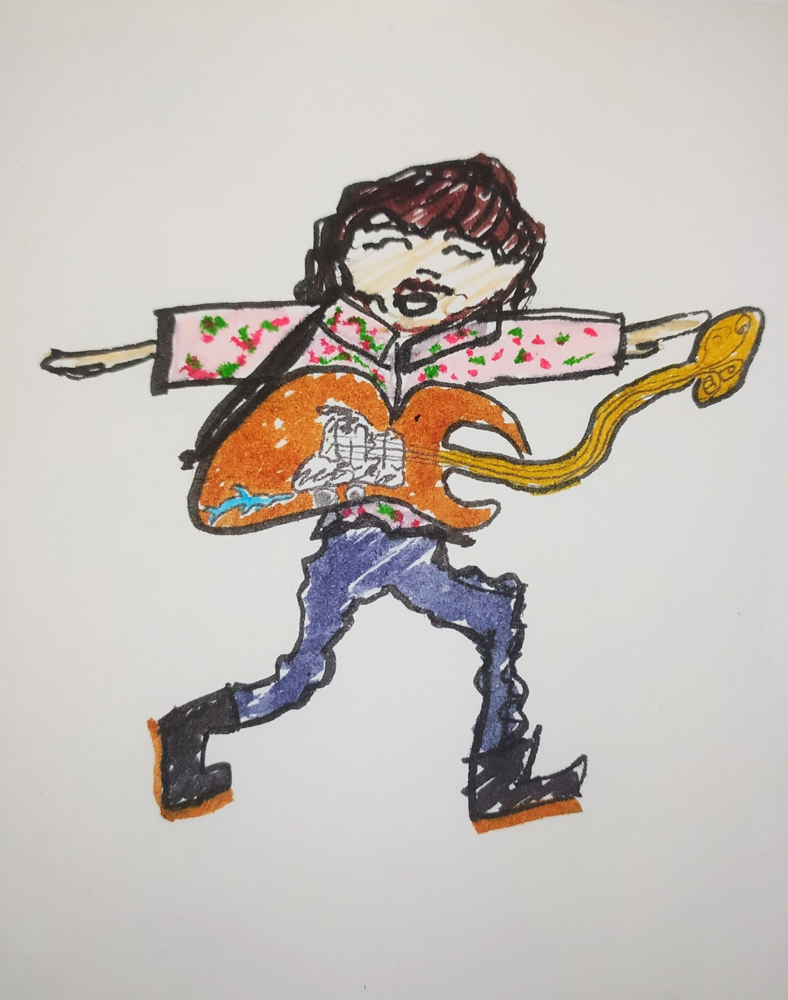

Herrie &
Maakwerk
Muzikant, geluidstechnicus en maker. Van het podium tot de soldeerbout: muziek staat centraal, de uitwerking is multidisciplinair. Ik bouw aan geluid, beeld en alles wat daartussenin glitcht.
MUZIEK EN GELUID
Curating the Noise
Mijn radioprogramma waar ik genres negeer en focus op alles wat kraakt, piept of een ziel heeft. Maandelijkse uitzendingen.
LUISTER OP MIXCLOUD →Het temmen van decibels en kabels. Als technicus zorg ik voor de perfecte balans tussen chaos en klank in zalen als Stelplaats en Vloer1.
VISUELE VERKENNINGEN
DIY & MAAKWERK
Naast geluid en beeld ben ik altijd bezig met tastbare creatie. Of het nu gaat om het fysiek drukken van merchandise of het assembleren van elektronica: ik geloof in de kracht van het zelf doen en blijf constant experimenteren met nieuwe technieken.
Bandmerch & Zeefdruk
Van ontwerp tot de eigenlijke druk. Ik creëer unieke T-shirts en merchandise voor bands met analoge technieken zoals zeefdrukken op textiel.
Soldeerwerk & Pedalen
Het bouwen van eigen effectpedalen en audio-elektronica. Analoge circuits tot leven brengen met de soldeerbout voor die ene specifieke klank.
Social Media Art
Digitale content die breekt met de standaard. Ik maak glitches en grafische collages voor sociale media die de visuele identiteit van projecten versterken.
Georganiseerde chaos nodig?
Koffie, soldeertips of wilde plannen? Alles is welkom.
Laten we iets kapot maken (of bouwen) →